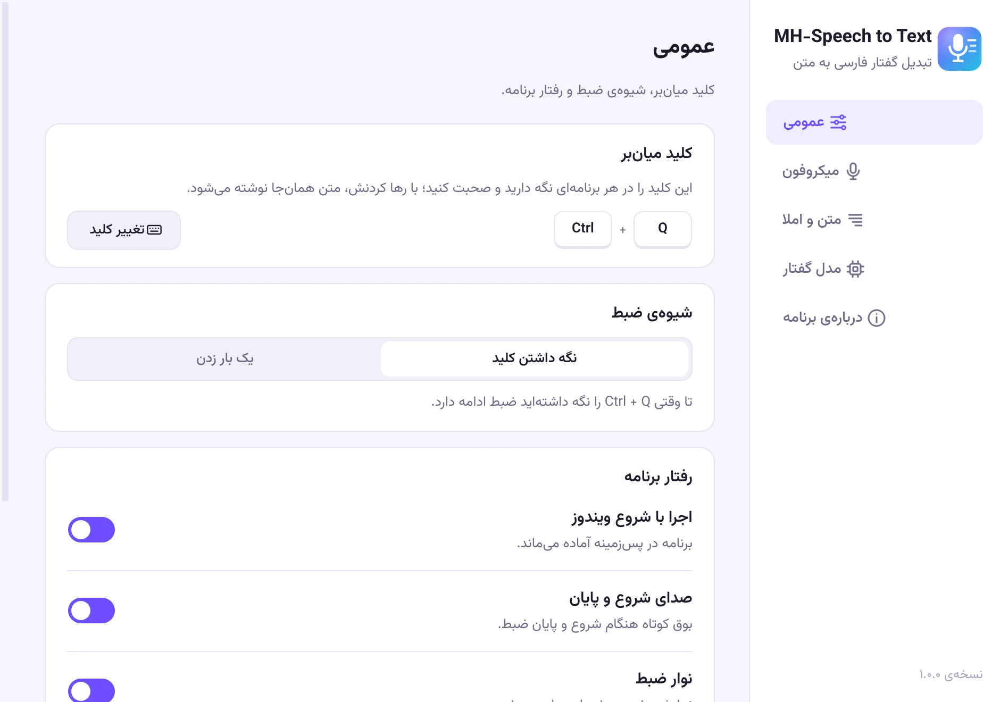
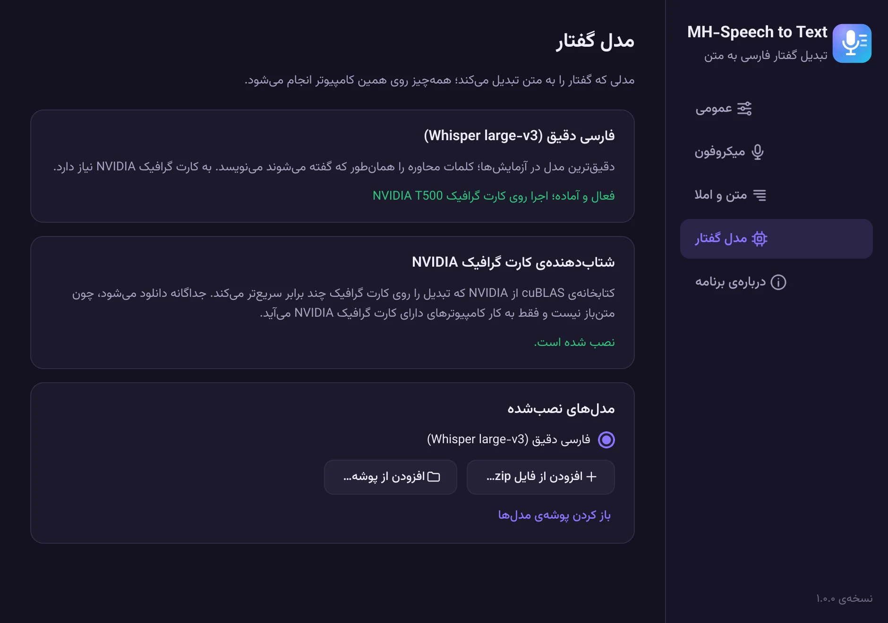

نرمافزار پیشرفتهی
تبدیل گفتار به متن فارسی
Advanced Persian
speech-to-text software
کلید میانبر دلخواهتان (پیشفرض Ctrl+Q) را نگه دارید و صحبت کنید، یا یک بار بزنید تا برنامه گوش کند و بار دوم تا متن را بنویسد. متن همانجایی نوشته میشود که مکاننما هست: در Word، مرورگر، تلگرام یا هر برنامهی دیگری. همهچیز روی کامپیوتر خودتان انجام میشود.
Hold your hotkey (Ctrl+Q by default, or any combination you choose) and speak, or press it once to start listening and again to write the text. Your words appear wherever the cursor is: Word, your browser, Telegram or any other app. Everything runs on your own computer.
نحوهی کارHow it works
سه قدم تا نوشتن با صداThree steps from voice to text
شروع کنیدStart
مکاننما را هر جا که میخواهید بنویسید بگذارید و کلید میانبر را نگه دارید، یا یک بار بزنید. کلید پیشفرض Ctrl+Q است و در تنظیمات هر ترکیبی را میتوانید انتخاب کنید.
Put the cursor wherever you want to write, then hold your hotkey or press it once. It is Ctrl+Q by default, and you can pick any combination in Settings.
صحبت کنیدSpeak
طبیعی حرف بزنید؛ محاورهای یا رسمی، یک جمله یا چند دقیقه.
Talk naturally, casual or formal, one sentence or several minutes.
تمام کنیدFinish
کلید را رها کنید، یا اگر یک بار زده بودید دوباره بزنید. متن همانجای مکاننما نوشته میشود، معمولاً کمتر از دو ثانیه بعد.
Release the key, or press it again if you pressed it once. The text appears at the cursor, usually within two seconds.
نمایش کوتاهShort demo
ببینید چطور کار میکندSee it in action
دیکته در Word با نگه داشتن کلید، و در VS Code با یک بار زدن آن.
Dictating into Word by holding the hotkey, and into VS Code by pressing it once.
ویژگیهاFeatures
ساختهشده برای زبان فارسیBuilt for the Persian language
نه یک ابزار عمومی با پشتیبانی نصفهنیمه از فارسی؛ از مدل گفتار تا املا و نیمفاصله، همهچیز برای فارسی تنظیم شده است.
Not a generic tool with partial Persian support: from the speech model to spelling and half-spaces, everything is tuned for Persian.
دقیق در فارسی محاورهAccurate everyday Persian
با مدل فارسی Whisper. کلمات همانطور نوشته میشوند که گفتهاید و رسمی نمیشوند.
A Persian-tuned Whisper model writes your words the way you said them, without making them formal.
آفلاین و خصوصیOffline and private
صدا و متن شما هیچوقت از کامپیوترتان خارج نمیشود و برنامه صدا را ذخیره هم نمیکند.
Your voice and text never leave your computer, and the app doesn't store audio.
سریعFast
متن همزمان با صحبت آماده میشود. روی کارت گرافیک جداگانه (NVIDIA، AMD یا Intel) معمولاً کمتر از دو ثانیه بعد از رها کردن کلید.
Transcribed while you speak. With a dedicated NVIDIA, AMD or Intel graphics card the text usually appears within two seconds.
املای درستCorrect spelling
نیمفاصله، «ی» و «ک» فارسی، علائم نگارشی و اعداد فارسی؛ بدون دست بردن در کلمات شما.
Half-spaces (ZWNJ), Persian ی and ک, punctuation and digits, without touching your words.
در همهی برنامههاWorks everywhere
Word، مرورگر، تلگرام، واتساپ، ویرایشگر کد و هر جای دیگری که بشود در آن تایپ کرد.
Word, browsers, Telegram, WhatsApp, code editors and anywhere else you can type.
به سلیقهی شماYours to tune
کلید میانبر دلخواه، حالت یکبار زدن برای دیکتههای طولانی، جایگزینی کلمات و تم تیره.
Any hotkey, a press-once mode for long dictation, custom word replacements and a dark theme.
نگاهی به برنامهA look inside
زیبا، ساده و کاملاً فارسیClean, simple and fully Persian


دانلودDownload
همین حالا امتحانش کنیدGet MH-Speech to Text
MH-Speech to Text
برای ویندوز ۱۰ و ۱۱ (۶۴ بیتی)
For Windows 10 and 11 (64-bit)
نیازمندیهاRequirements
- ویندوز ۱۰ یا ۱۱، نسخهی ۶۴ بیتی، و یک میکروفون
- کارت گرافیک NVIDIA، AMD یا Intel با دستکم ۴ گیگابایت حافظه (پیشنهادی؛ بدون آن برنامه روی پردازنده و کندتر کار میکند)
- حدود ۳ گیگابایت فضای خالی برای برنامه و مدل گفتار
- Windows 10 or 11 (64-bit) and a microphone
- An NVIDIA, AMD or Intel graphics card with at least 4 GB of memory (recommended; without one the app runs on the CPU, more slowly)
- About 3 GB of free disk space for the app and the speech model
eccaf180957fd5c2000ddf7468efc18f82b48d97e42a6ec07f16bd32da29b345
نصب در سه قدمInstall in three steps
- فایل نصب را اجرا کنید. برنامه مثل نرمافزارهای دیگر در Program Files نصب میشود.
- در اولین اجرا، مدل گفتار فارسی مناسب سیستم شما (حدود ۱.۶ گیگابایت) و اگر کارت گرافیک NVIDIA دارید، شتابدهندهی آن یک بار دانلود میشود. بعد از آن برنامه کاملاً آفلاین کار میکند.
- از این به بعد، در هر برنامهای کلید میانبر (پیشفرض Ctrl+Q) را نگه دارید یا یک بار بزنید و صحبت کنید. کلید و شیوهی ضبط را در تنظیمات میتوانید عوض کنید.
- Run the installer. Like other programs, the app is installed in Program Files.
- On first run, the Persian speech model for your system (about 1.6 GB) and, if you have an NVIDIA graphics card, its accelerator are downloaded once. After that the app works fully offline.
- From then on, in any app, hold your hotkey (Ctrl+Q by default) or press it once, and speak. You can change the key and the recording mode in Settings.
اگر ویندوز پیغام «Windows protected your PC» نشان داد، روی More info و بعد Run anyway بزنید. این پیغام برای برنامههای تازهمنتشرشده عادی است.
If Windows shows “Windows protected your PC”, click More info and then Run anyway. This is normal for newly released programs.
کد کامل برنامه در گیتهاب در دسترس است و خودتان هم میتوانید آن را بسازید.
The full source code is on GitHub, so you can also build it yourself.
پرسشهای رایجFAQ
سؤالی دارید؟Questions?
برنامه رایگان است؟Is it free?
بله. MH-Speech to Text کاملاً رایگان و متنباز است و با مجوز MIT منتشر شده است.
Yes. MH-Speech to Text is completely free and open source, released under the MIT License.
به اینترنت نیاز دارد؟Does it need the internet?
فقط یک بار، برای دانلود مدل گفتار در اولین اجرا. بعد از آن بدون اینترنت کار میکند.
Only once, to download the speech model on first run. After that it works without the internet.
صدای من جایی فرستاده میشود؟Is my voice sent anywhere?
نه. تبدیل گفتار به متن کاملاً روی کامپیوتر خودتان انجام میشود و برنامه صدا را ذخیره هم نمیکند.
No. Speech recognition runs entirely on your computer, and the app does not store audio.
کارت گرافیک NVIDIA ندارم؛ کار میکند؟I don't have an NVIDIA card. Will it work?
بله. از نسخهی ۱.۱، برنامه روی کارتهای گرافیک AMD و Intel هم کار میکند. بدون کارت گرافیک هم روی پردازنده اجرا میشود؛ کندتر است و متن چند ثانیه بعد از رها کردن کلید نوشته میشود. در تنظیمات، بخش «مدل گفتار»، خودتان میتوانید انتخاب کنید که گفتار روی کارت گرافیک پردازش شود یا پردازنده.
Yes. Since version 1.1 the app also runs on AMD and Intel graphics cards. Without a graphics card it runs on the CPU: slower, with the text appearing a few seconds after you release the key. Under Settings › Speech model you can choose yourself whether speech is processed on the graphics card or the CPU.
کلمات انگلیسی را چطور مینویسد؟What about English words?
اصطلاحات انگلیسی به خط فارسی نوشته میشوند. در تنظیمات، بخش «جایگزینی کلمات»، میتوانید املای دلخواه اصطلاحات پرکاربردتان را تعیین کنید.
English terms are written in Persian script. In Settings, under word replacements, you can set your preferred spelling for the terms you use often.
چطور حذفش کنم؟How do I uninstall it?
از Settings › Apps ویندوز، MH-Speech to Text را حذف کنید. حذفکننده میپرسد مدلهای دانلودشده و تنظیمات هم پاک شوند یا نه.
Remove MH-Speech to Text from Windows Settings › Apps. The uninstaller asks whether to also delete the downloaded models and your settings.
اعتماد و شفافیتTrust and transparency
سیاست امضای کد و حریم خصوصیCode signing policy and privacy
سیاست امضای کدCode signing policy
Free code signing provided by SignPath.io, certificate by SignPath Foundation.
نسخههای ویندوز از روی کد عمومی همین پروژه روی GitHub Actions ساخته و امضا میشوند.
Windows releases are built from this project's public source code on GitHub Actions and signed through SignPath.
- مشارکتکنندگان و بازبینها: Mohammad Hajloo
- تأییدکنندگان امضا: Mohammad Hajloo
- Committers and reviewers: Mohammad Hajloo
- Approvers: Mohammad Hajloo
حریم خصوصیPrivacy policy
This program will not transfer any information to other networked systems unless specifically requested by the user or the person installing or operating it.
تبدیل گفتار کاملاً روی کامپیوتر شما انجام میشود و صدا و متن شما هیچوقت از آن خارج نمیشود. تنها ارتباط برنامه با اینترنت، دانلود مدل گفتار (و روی کامپیوترهای دارای کارت گرافیک NVIDIA، کتابخانهی cuBLAS) در اولین اجراست که خودتان آن را شروع میکنید.
Speech recognition runs entirely on your computer; your audio and text never leave it. The only network access is the first-run download of the speech model (and, on PCs with an NVIDIA graphics card, NVIDIA's cuBLAS library), which you start yourself.
مجوزهاLicenses
- برنامه: MH-Speech to Text، مجوز MIT
- مدل گفتار: Whisper از OpenAI (MIT) و نسخهی فارسی آن از AmirMohseni (Apache-2.0)
- موتور تبدیل: faster-whisper، CTranslate2 و whisper.cpp (MIT)
- رابط کاربری: Qt و PySide6 (LGPL-3.0)
- قلم وزیرمتن، طراحی زندهیاد صابر راستیکردار (OFL-1.1)
- App: MH-Speech to Text, MIT License
- Speech model: Whisper by OpenAI (MIT), Persian fine-tune by AmirMohseni (Apache-2.0)
- Engines: faster-whisper, CTranslate2 and whisper.cpp (MIT)
- Interface: Qt and PySide6 (LGPL-3.0)
- Vazirmatn font, designed by the late Saber Rastikerdar (OFL-1.1)